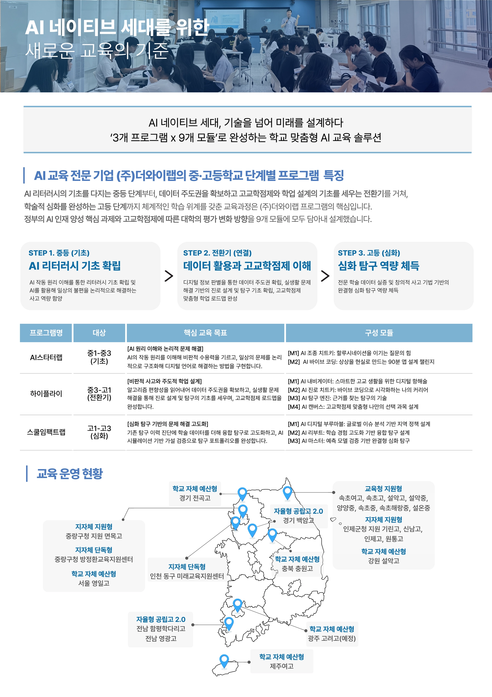

중등 (기초)
AI 리터러시 기초 확립AI 작동 원리 이해를 통한 리터러시 기초 확립 및 AI를 활용해 일상의 불편을 논리적으로 해결하는 사고 역량 함양.
AI 네이티브 세대, 기술을 넘어 미래를 설계하다. '3개 프로그램 × 9개 모듈'로 완성하는 학교 맞춤형 AI 교육 솔루션.
AI 리터러시의 기초를 다지는 중등 단계부터, 데이터 주도권을 확보하고 고교학점제와 학업 설계의 기초를 세우는 전환기를 거쳐, 학술적 심화를 완성하는 고등 단계까지, 체계적인 학습 위계를 갖춘 교육과정이 (주)더와이랩 프로그램의 핵심입니다. 정부의 AI 인재 양성 핵심 과제와 고교학점제에 따른 대학의 평가 변화 방향을 9개 모듈에 모두 담아내 설계했습니다.
AI 작동 원리 이해를 통한 리터러시 기초 확립 및 AI를 활용해 일상의 불편을 논리적으로 해결하는 사고 역량 함양.
디지털 정보 판별을 통한 데이터 주도권 확립, 실생활 문제 해결 기반의 진로 설계 및 탐구 기초 확립, 고교학점제 맞춤형 학업 로드맵 완성.
전문 학술 데이터 실증 및 창의적 사고 기법 기반의 완결형 심화 탐구 역량 체득.
| 프로그램명 | 대상 | 핵심 교육 목표 | 구성 모듈 |
|---|---|---|---|
| AI 스타터랩 | 중1–중3 기초 |
[AI 원리 이해와 논리적 문제 해결] AI의 작동 원리를 이해해 비판적 수용력을 기르고, 일상의 문제를 논리적으로 구조화해 디지털 언어로 해결하는 방법을 구현합니다. |
[M1] AI 조종 치트키: 할루시네이션을 이기는 질문의 힘 [M2] AI 바이브 코딩: 상상을 현실로 만드는 90분 앱 설계 챌린지 |
| 하이플라이 | 중3–고1 전환기 |
[비판적 사고와 주도적 학업 설계] 알고리즘 편향성을 읽어내어 데이터 주도권을 확보하고, 실생활 문제 해결을 통해 진로 설계 및 탐구의 기초를 세우며, 고교학점제 로드맵을 완성합니다. |
[M1] AI 내비게이터: 스마트한 고교 생활을 위한 디지털 항해술 [M2] AI 진로 치트키: 바이브 코딩으로 시각화하는 나의 커리어 [M3] AI 탐구 엔진: 근거를 찾는 탐구의 기술 [M4] AI 캔버스: 고교학점제 맞춤형 나만의 선택 과목 설계 |
| 스쿨임팩트랩 | 고1–고3 심화 |
[심화 탐구 기반의 문제 해결 고도화] 기존 탐구 이력 진단에 학술 데이터를 더해 융합 탐구로 고도화하고, AI 시뮬레이션 기반 가설 검증으로 탐구 포트폴리오를 완성합니다. |
[M1] AI 디지털 부루마블: 글로벌 이슈 분석 기반 지역 정책 설계 [M2] AI 리부트: 학습 경험 고도화 기반 융합 탐구 설계 [M3] AI 마스터: 예측 모델 검증 기반 완결형 심화 탐구 |
학교 자체 예산형 · 교육청 지원형 · 지자체 지원형 · 자율형 공립고 2.0 등 다양한 형태로 운영 중입니다.

단계·학년·시수에 맞춰 모듈을 조합해 드립니다.
교육 문의 →